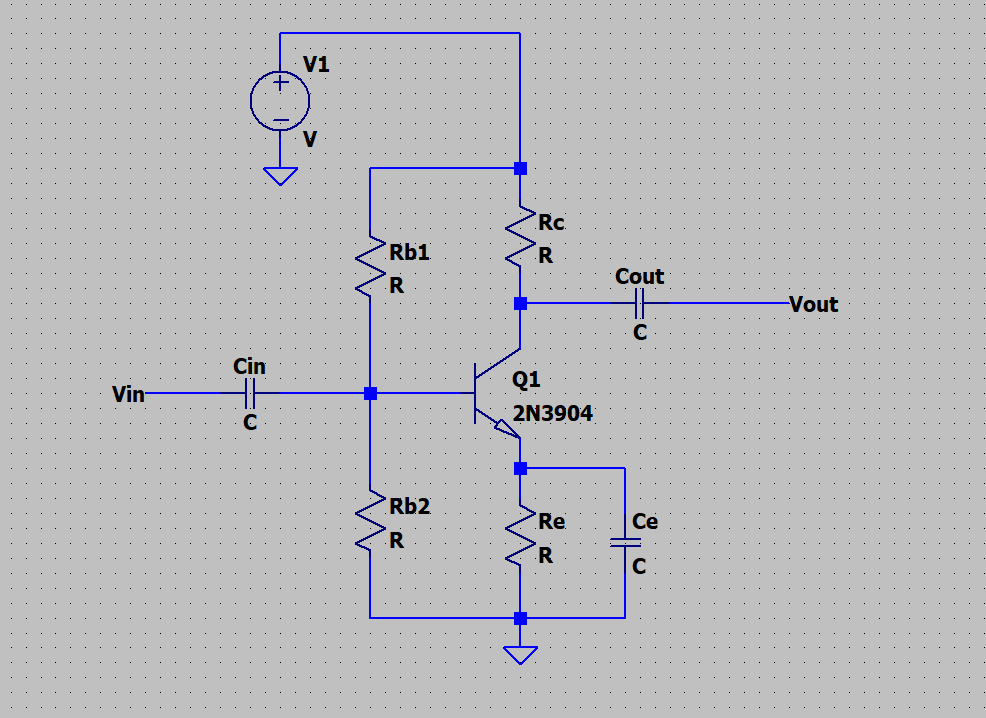
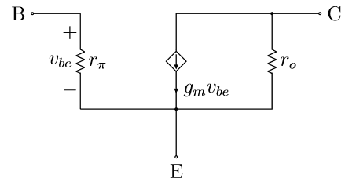

May 2026
The common emitter amplifier is a very common type of amplifier. It has good voltage gain and also current gain, and uses a single transistor. It is very common for amplifying small AC signals.
It has a conduction angle of 360 degrees, meaning the transistor is conducting in all parts of the AC cycle. It has very low distortion, but this means that it also has a low efficiency, so it is not used for applications which require more than a few mW of power output.
This page aims to simplify the design process. The theory here was mostly obtained through UBC's ELEC301 2025W course.

Here is the schematic for a standard common emitter amplifier. I will briefly explain what each part does, and how to calculate values for them.
To avoid having to type out way too much text, I will shorten a bunch of stuff.
In a CE amplifier, you can't choose all the parameters. Out of the three main parameters (Zin, Zout, gain), you can only really fix one of them and the rest will be decided for you.
This resistor divider forms the biasing network for the base of the BJT. Essentially we want the BJT to be in its active region where it can effectively amplify small signals. On a side note, the purpose of RB2 (as opposed to just having a single pullup as the bias network) is to improve the robustness of the DC bias point when the DC current gain varies (such as when the BJT is heated, or replaced with a different part number). The magnitude of DC current flowing into Rb2 should be much greater than the amount going into the base, meaning that the base does not change the divider voltage by much from its unloaded, "native" voltage.
A common rule of thumb is to use the "1/3 rule". There are a few variations of this, but essentially this refers to setting Ve to approximately 1/3 of VCC, and Vc to be approximately 2/3 of VCC.
If we use the 1/3 rule, we basically just set the divider ratio such that the unloaded output voltage is equal to 1/3*VCC + 0.7. The 0.7V is due to the forward voltage of the base-emitter PN junction, which basically acts like a diode. The value of Rb1 + Rb2 can't be calculated properly at this stage since we don't know Ic or Ie, so do that later.
Since the base DC bias voltage is basically fixed, which means that Ve is also basically fixed (to 1/3 VCC), the quiescent current of the amplifier is essentially controlled by Re. At this stage we can decide what Re is, and usually that is decided by the required parameters of the amplifier. If Zout is required, then for a transistor with high gain, you can basically just set Re = Rc = Zout. This is because in a high gain device, Ic >> Ib, so Ic ~= Ie. Since the 1/3 rule says that Rc and Re have the same voltage across them, and the currents are similar, the resistances are also similar.

If you want to set Zin instead, you can basically set the emitter current such that r_pi ends up being close to your required input impedance. Note that this will also be in parallel with the base DC bias resistors, so keep that in mind. The formula for r_pi (approximate) is \( r_\pi = \frac{\beta V_T}{I_C} \), where \( \beta \) is the DC current gain of the BJT, and \( V_T \) is the thermal voltage, equal to kT/q, k being the Boltzmann constant, T being temperature in Kelvin, and q being elementary charge. Basically you don't need to remember all that, just know that the thermal voltage is approximately 26 mV at room temperature.
In this configuration, the emitter node is shorted to ground in the passband of the amplifier due to Ce, meaning the calculation for Zin is basically just rpi without needing to account for the emitter node.
Since the BJT is basically just a current source on the collector node, the output impedance is approximately equal to Rc, regardless of everything else. This is an approximation due to the fact that Early voltage exists and manifests as a parallel resistor on the collector, but that is a small effect and doesn't change too much.
Basically set this to be the same value as Re if you don't care about approximating, and also your DC current gain is high. That way the voltage drop across Rc will be the same as that of Re, and it will satisfy the 1/3 rule.